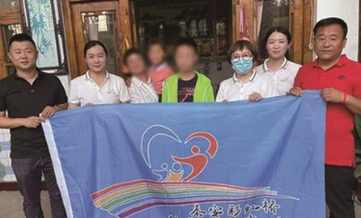
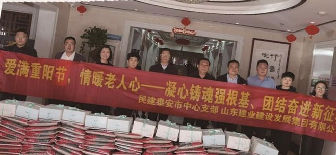
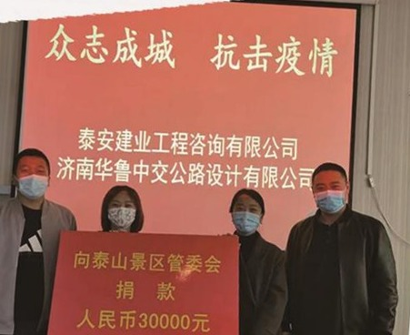
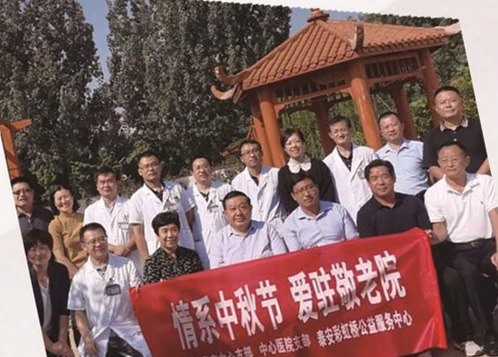
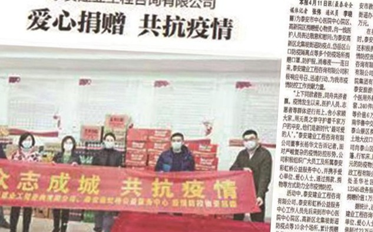

建业造福社会 · 以专业所长回馈社会，用爱心温暖城市
山东建业建设发展集团始终秉持“诚信经营建业，建业造福社会”的企业宗旨，把社会责任融入企业发展的基因。在专注工程建设主业、以品质与数智化驱动高质量发展的同时，公司长期心系地方教育、关爱困难群体、投身公益志愿服务，努力让发展成果更多惠及社会与民生。
我们坚信，企业的价值不仅在于建造优质工程，更在于以专业所长与赤诚之心回馈社会。从 2008 年参与北川灾后重建，到 2019 年发起成立“泰安彩虹桥公益服务中心”；从校园里的助学助教，到敬老院中的暖心慰问——建业人把“造福社会”写进了一以贯之的行动之中。
立足主业、发挥所长，把企业责任落到实处。
长期心系地方教育，联合民建泰安市中心支部等走进泰安六中开展中考助力与教师节慰问，捐赠爱心物资与办公家具；持续为贫困学生捐资助学、为希望小学捐赠教材设备。
依托 2019 年发起成立的“泰安彩虹桥公益服务中心”，常态化开展助学帮扶、公益惠民等志愿服务，凝聚更多社会力量参与公益事业。
精准帮扶基层困难家庭，慰问孤寡老人，为敬老院捐赠生活与爱心物资，让关爱抵达更需要的地方。
2008 年主动参与北川羌族自治县墩上乡灾后重建，扎根现场攻克技术难题，因突出贡献获北川当地及泰安市委、市政府表彰。
积极响应国家环保政策，研发取得“建筑工程施工用湿法除尘装置及除尘方法”专利，有效控制施工扬尘，守护施工人员与周边居民健康。
新冠疫情期间主动投身防疫一线，参与物资保障与社区联防联控，获评“山东省抗击新冠疫情先进企业”。
一路走来，建业人把责任写进时间。
公司董事长杨华文主动参与北川羌族自治县墩上乡灾后重建工作，扎根现场与团队攻克技术难题，因在灾后重建中的突出贡献，获得北川当地及泰安市委、市政府表彰。
主动发起成立公益服务平台，为贫困学生捐资助学、为希望小学捐赠教材设备，精准帮扶基层困难家庭，慰问孤寡老人并为敬老院捐赠物资。
联合民建泰安市中心支部、泰安市建设监理协会、泰安彩虹桥公益服务中心走进泰安六中，为学子提供衣物、鲜花等爱心物资，以实际行动为校园学子送去温暖与关爱。
联合民建泰安市中心支部走进泰安六中虎山路校区开展教师节慰问活动，捐赠价值近 1.5 万元的办公家具，助力改善教学办公条件。
一帧帧温暖瞬间，记录建业人的责任足迹。






微信公众号